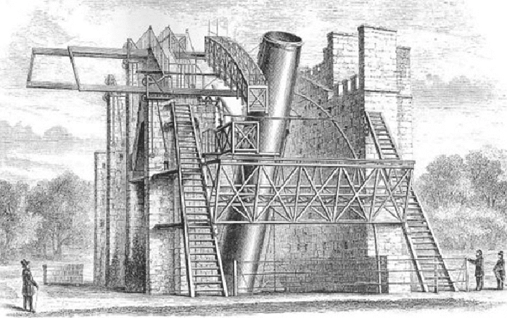
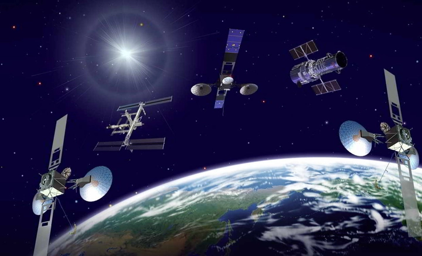
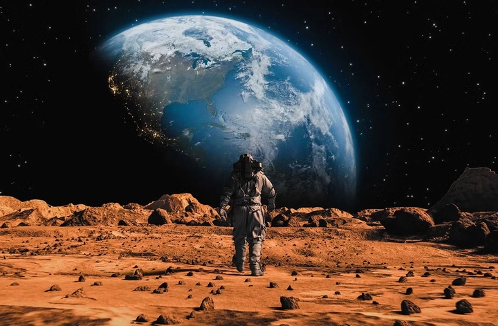
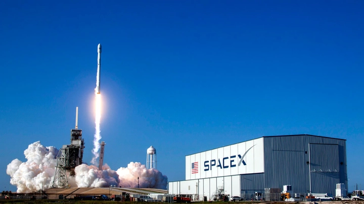
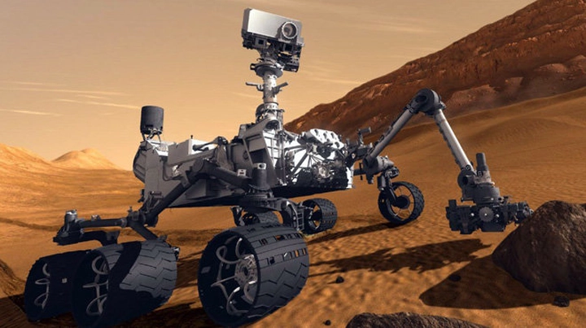

Kỷ nguyên khám phá vũ trụ của nhân loại
Từ thuở xa xưa, con người đã ngước nhìn bầu trời đầy sao với niềm tò mò và khát vọng được biết “Phía ngoài kia là gì? Chúng ta đến từ đâu?”.Những câu hỏi ấy không chỉ là sự tò mò đơn thuần, mà là nguồn cảm hứng khởi đầu cho mọi hành trình chinh phục không gian sau này.
Tuy nhiên, phải đến thế kỷ 17 – thời đại của khoa học hiện đại – khát vọng ấy mới thực sự tìm được hình hài cụ thể. Nếu thế kỷ 20 chứng kiến kỷ nguyên công nghiệp và công nghệ thông tin, thì thế kỷ 21 đang mở ra kỷ nguyên khám phá vũ trụ – nơi trí tuệ, khoa học và công nghệ hòa quyện để đưa nhân loại vượt khỏi giới hạn của Trái Đất.
Ngày nay, việc khám phá không gian không còn là chuyện riêng của NASA hay các siêu cường, mà là cuộc hành trình chung của toàn nhân loại – từ các công ty tư nhân như SpaceX, Blue Origin, đến các quốc gia như Việt Nam chúng ta, đều góp phần vào bức tranh rộng lớn của chinh phục vũ trụ.
Hôm nay hãy cũng TrithucWorld thảo luận về chủ đề mà cả thế giới đang cùng quan tâm này nhé!
1. Giấc mơ chạm đến bầu trời – Khởi đầu của kỷ nguyên không gian
Năm 1609, Galileo Galilei chế tạo chiếc kính thiên văn đầu tiên có khả năng quan sát các thiên thể ở khoảng cách xa. Với công cụ tưởng chừng đơn giản này, ông đã phát hiện ra các vệ tinh của Sao Mộc, các pha của Sao Kim, các miệng núi lửa trên Mặt Trăng, và vô số bí mật khác của bầu trời. Những phát hiện này không chỉ làm lung lay niềm tin tôn giáo thời bấy giờ, mà còn mở ra một cuộc cách mạng trong nhận thức: Trái Đất không phải trung tâm của vũ trụ.
Từ đó, con người bắt đầu hiểu rằng vũ trụ bao la hơn tưởng tượng rất nhiều, và việc khám phá nó là điều hoàn toàn có thể bằng khoa học. Các nhà thiên văn sau Galileo như Johannes Kepler và Isaac Newton đã tiếp nối, đặt nền móng cho các định luật về quỹ đạo và lực hấp dẫn – nền tảng toán học cho mọi chuyến bay vũ trụ sau này.

Giấc mơ “chạm đến bầu trời” dần trở thành mục tiêu khoa học cụ thể, không chỉ của những triết gia hay học giả mà còn của cả nhân loại. Nó truyền cảm hứng cho các phát minh như khí cầu, máy bay, tàu lượn, và sau này là tên lửa. Mỗi thế hệ, con người lại tiến thêm một bước nhỏ nhưng vững chắc trong hành trình khám phá bầu trời rộng lớn.
Ngày nay, khi nhìn lại, ta có thể thấy rằng chính chiếc kính thiên văn thô sơ của Galileo đã mở ra cánh cửa đầu tiên của kỷ nguyên không gian. Không có những bước đi ấy, sẽ không có tàu Apollo 11, không có trạm ISS, và không có giấc mơ đưa con người lên Sao Hỏa. Giấc mơ chạm đến bầu trời – tưởng chừng chỉ là niềm tin ngây thơ của một nhà khoa học đơn độc – lại trở thành ngọn lửa khởi đầu cho hành trình vĩ đại nhất trong lịch sử loài người.
2. Cuộc chạy đua không gian giữa Mỹ và Liên Xô
Thế kỷ 20 đánh dấu một trong những thời kỳ cạnh tranh gay gắt nhất trong lịch sử nhân loại — Chiến tranh Lạnh. Không chỉ là cuộc đối đầu về quân sự hay chính trị, đây còn là cuộc chạy đua công nghệ và khoa học chưa từng có, mà đỉnh cao chính là việc chinh phục không gian.
Năm 1957, Liên Xô khiến cả thế giới kinh ngạc khi phóng thành công Sputnik 1, vệ tinh nhân tạo đầu tiên của Trái Đất. Sự kiện này không chỉ là thành tựu kỹ thuật mà còn mang ý nghĩa biểu tượng sâu sắc: loài người đã chính thức “bước ra” khỏi hành tinh quê hương. Tiếng “bíp bíp” yếu ớt của Sputnik vang lên qua sóng radio khi nó bay vòng quanh Trái Đất, nhưng lại là tiếng chuông mở đầu cho kỷ nguyên không gian.
Chỉ bốn năm sau, năm 1961, Yuri Gagarin – phi hành gia người Liên Xô – trở thành người đầu tiên bay quanh Trái Đất. Câu nói nổi tiếng của ông, “Tôi nhìn thấy Trái Đất thật đẹp!”, vẫn được xem là biểu tượng cho khát vọng khám phá của loài người.
Không chấp nhận bị bỏ lại phía sau, Mỹ đã nhanh chóng đáp trả bằng chương trình Apollo. Sau nhiều năm thử nghiệm, ngày 20 tháng 7 năm 1969, Neil Armstrong đặt bước chân đầu tiên của con người lên Mặt Trăng và nói câu bất hủ:
“Đó là một bước nhỏ của con người, nhưng là bước nhảy vĩ đại của nhân loại.”
Khoảnh khắc ấy không chỉ khép lại cuộc chạy đua giữa hai siêu cường, mà còn mở ra thời đại mới của khám phá vũ trụ, nơi những giới hạn về không gian, công nghệ và trí tưởng tượng đều bị phá vỡ. Cuộc cạnh tranh tưởng chừng mang tính chính trị, nhưng rốt cuộc lại trở thành động lực lớn nhất cho sự phát triển khoa học và công nghệ không gian của toàn nhân loại.
3. Thời đại vệ tinh – Khi Trái Đất được nhìn từ không gian
Sau khi con người thành công trong việc phóng tên lửa và đưa người ra khỏi Trái Đất, giai đoạn tiếp theo của kỷ nguyên không gian chính là thời đại vệ tinh. Những “con mắt nhân tạo” quay quanh hành tinh đã thay đổi hoàn toàn cách chúng ta hiểu và quản lý thế giới.
Từ thập niên 1960, hàng nghìn vệ tinh được phóng lên quỹ đạo với nhiều mục đích khác nhau: liên lạc, dự báo thời tiết, định vị GPS, quan sát Trái Đất, nghiên cứu khí hậu và truyền hình quốc tế. Nhờ đó, khoảng cách giữa các lục địa dường như biến mất — thông tin, hình ảnh và dữ liệu có thể được truyền đi tức thì từ bất kỳ nơi nào trên thế giới.

Những vệ tinh quan trắc như Landsat, Terra, hoặc Copernicus cung cấp dữ liệu chi tiết giúp con người theo dõi biến đổi khí hậu, nạn phá rừng, ô nhiễm đại dương và sự tan chảy băng ở hai cực. Ở lĩnh vực dân sự, hệ thống định vị toàn cầu GPS, GLONASS, Galileo đã trở thành nền tảng không thể thiếu cho giao thông, thương mại điện tử và cả cuộc sống hằng ngày.
Từ góc nhìn vũ trụ, Trái Đất hiện lên như một khối cầu xanh mong manh, khiến nhân loại nhận ra rằng tất cả chúng ta đang cùng chia sẻ một ngôi nhà chung. Chính hình ảnh ấy đã khơi dậy ý thức bảo vệ môi trường và thúc đẩy nhiều phong trào toàn cầu về phát triển bền vững.
Nếu như kỷ nguyên tên lửa đưa con người “ra ngoài Trái Đất”, thì thời đại vệ tinh giúp chúng ta hiểu Trái Đất hơn bao giờ hết. Nhờ những công nghệ đó, việc kết nối toàn cầu – từ dự báo thời tiết, gọi điện xuyên lục địa cho đến khám phá khí hậu – đã trở thành một phần tự nhiên của cuộc sống hiện đại.
5. Cuộc đổ bộ lên Sao Hỏa – Bước tiếp theo của nhân loại
Nếu Mặt Trăng là “bước đầu tiên” trong hành trình rời khỏi Trái Đất, thì Sao Hỏa chính là “đích đến tiếp theo” – biểu tượng cho khát vọng vươn xa hơn của con người. Hành tinh đỏ này, cách chúng ta khoảng 225 triệu km, từ lâu đã gợi nên bao câu hỏi: Liệu nơi đó có từng tồn tại đại dương, có từng có sự sống, và có thể trở thành ngôi nhà thứ hai cho nhân loại hay không?
Trải qua nhiều thập kỷ, hàng loạt sứ mệnh đã được triển khai để tìm lời giải. Những cỗ xe tự hành như Curiosity và Perseverance của NASA, hay Zhurong của Trung Quốc, đã di chuyển hàng chục kilomet trên bề mặt Sao Hỏa, gửi về hàng trăm nghìn bức ảnh và mẫu dữ liệu địa chất quý giá. Các thiết bị tinh vi trên đó có thể phân tích khoáng chất, tìm dấu vết của nước cổ đại và thậm chí thử nghiệm công nghệ sản xuất oxy từ CO₂ trong khí quyển Sao Hỏa – một bước tiến có thể quyết định khả năng sinh tồn của con người trên hành tinh này.

Không chỉ dừng ở việc khám phá, con người còn bắt đầu mơ về việc định cư. Tập đoàn SpaceX của Elon Musk đã công bố kế hoạch táo bạo: xây dựng các căn cứ tự cung tự cấp trên Sao Hỏa, vận chuyển người và hàng hóa bằng tàu Starship khổng lồ. Ý tưởng này từng bị cho là viễn tưởng, nhưng nay lại dần trở thành hướng đi được NASA, ESA và các tổ chức nghiên cứu toàn cầu quan tâm nghiêm túc.
Dẫu vẫn còn hàng trăm thách thức — từ bức xạ vũ trụ, trọng lực thấp đến thiếu tài nguyên — cuộc chinh phục Sao Hỏa vẫn mang ý nghĩa vượt ra ngoài khoa học. Nó thể hiện tinh thần “không có giới hạn” của loài người, khẳng định rằng dù ở bất kỳ nơi đâu, con người vẫn mang trong mình bản năng khám phá, kiến tạo và hy vọng. Nếu một ngày kia, lá cờ của Trái Đất tung bay trên hành tinh đỏ, đó sẽ là minh chứng hùng hồn nhất cho năng lực và trí tuệ của nền văn minh nhân loại.
6. Khám phá các hành tinh ngoài hệ Mặt Trời (Exoplanets)
Nếu việc đặt chân lên Mặt Trăng hay Sao Hỏa cho ta hiểu thêm về chính hệ Mặt Trời của mình, thì việc khám phá các hành tinh ngoài hệ Mặt Trời (exoplanets) lại mở ra một chương hoàn toàn mới – chương của vũ trụ vô tận. Chỉ trong vài thập kỷ qua, nhờ vào những công cụ quan sát siêu nhạy như Kepler, TESS và đặc biệt là James Webb Space Telescope (JWST), con người đã phát hiện ra hơn 5.000 hành tinh nằm quanh những ngôi sao xa xôi trong Dải Ngân Hà.
Những thế giới đó phong phú đến choáng ngợp: có hành tinh to gấp hàng chục lần Trái Đất, có hành tinh chỉ cách sao mẹ vài ngày quỹ đạo nên bầu trời luôn rực lửa, có hành tinh hoàn toàn bị băng phủ, và cả những hành tinh có thể chứa đại dương sâu hàng nghìn km. Đặc biệt, một số nằm trong “vùng có thể ở được” (habitable zone) – nơi nhiệt độ vừa đủ để nước tồn tại ở thể lỏng, điều kiện quan trọng nhất cho sự sống như ta biết.
Các nhà khoa học hiện đang dùng James Webb để “soi” ánh sáng lọc qua bầu khí quyển của những hành tinh xa xôi này, phân tích từng vệt quang phổ để phát hiện dấu hiệu của hơi nước, oxy, methane hay carbon dioxide – những dấu vết hóa học có thể tiết lộ sự hiện diện của sự sống. Mỗi khi một hành tinh “Trái Đất 2.0” tiềm năng được phát hiện, cả thế giới lại dấy lên niềm hy vọng rằng chúng ta có thể không đơn độc trong vũ trụ bao la.
Song song với khoa học, việc nghiên cứu exoplanet còn có giá trị triết học sâu sắc. Nó khiến con người nhìn lại chính mình – một loài sinh vật nhỏ bé sống trên hạt bụi xanh giữa biển sao vô tận, nhưng lại có thể vươn tầm trí tuệ để hiểu về những thế giới cách hàng năm ánh sáng. Cuộc hành trình tìm kiếm sự sống ngoài Trái Đất vì thế không chỉ là câu chuyện về công nghệ hay khám phá, mà còn là hành trình tìm kiếm ý nghĩa tồn tại của nhân loại trong vũ trụ mênh mông.
7. Du hành không gian thương mại – Khi ai cũng có thể trở thành phi hành gia
Từ những trang tiểu thuyết khoa học viễn tưởng của thế kỷ XX, ý tưởng “con người bình thường có thể bay vào vũ trụ” từng bị xem là điều không tưởng. Nhưng chỉ trong vài năm trở lại đây, giấc mơ đó đã bắt đầu trở thành hiện thực. Các tập đoàn tư nhân như SpaceX, Blue Origin, và Virgin Galactic đã mở ra kỷ nguyên du hành không gian thương mại – nơi việc rời khỏi Trái Đất không còn là đặc quyền của phi hành gia chuyên nghiệp.
Chuyến bay Inspiration4 của SpaceX vào năm 2021 là dấu mốc đầu tiên khi toàn bộ phi hành đoàn đều là dân sự, bay vòng quanh Trái Đất trong ba ngày mà không có sự hiện diện của phi hành gia NASA. Blue Origin của Jeff Bezos cũng đã đưa nhiều du khách lên rìa không gian, nơi họ được chiêm ngưỡng cảnh Trái Đất cong tròn xanh biếc và trải nghiệm vài phút không trọng lực. Trong khi đó, Virgin Galactic đang thương mại hóa mô hình “chuyến bay cận quỹ đạo” với mức giá hàng trăm nghìn đô la cho mỗi hành khách – bước khởi đầu cho ngành du lịch vũ trụ trong tương lai gần.

Điều thú vị là, cùng lúc với những bước tiến thực tế ngoài không gian, trong thế giới ảo cũng đang diễn ra một “cuộc đua song song”. Các nền tảng Game NFT, Metaverse, và mô phỏng vũ trụ kỹ thuật số đang giúp hàng triệu người trải nghiệm cảm giác khám phá, tương tác và sáng tạo trong không gian ảo. Nhiều chuyên gia xem đây là giai đoạn chuẩn bị cho nền kinh tế không gian thế hệ mới – nơi công nghệ blockchain, trí tuệ nhân tạo và mô phỏng 3D sẽ hòa quyện để con người có thể “sống, làm việc và khám phá” cả trong không gian thực lẫn ảo.
Khi chi phí phóng tên lửa giảm mạnh, công nghệ tái sử dụng tàu vũ trụ được hoàn thiện và du lịch không gian dần trở nên phổ biến, câu nói “ai cũng có thể trở thành phi hành gia” sẽ không còn là lời ví von, mà là hiện thực của thế kỷ XXI.
8. Kính thiên văn James Webb – Cửa sổ nhìn về thuở sơ khai của vũ trụ
Ngày 25 tháng 12 năm 2021, tên lửa Ariane 5 đưa kính thiên văn James Webb (JWST) rời bệ phóng ở Guiana thuộc Pháp, đánh dấu bước ngoặt lớn trong lịch sử quan sát vũ trụ. Với tấm gương chính đường kính 6,5 mét – gấp hơn ba lần so với Hubble – và công nghệ hồng ngoại tiên tiến, James Webb được ví như “cỗ máy thời gian” giúp nhân loại nhìn ngược lại quá khứ 13,5 tỷ năm, đến thời điểm những thiên hà đầu tiên hình thành sau vụ nổ Big Bang.
James Webb không chỉ là một thiết bị khoa học khổng lồ trị giá hơn 10 tỷ USD, mà còn là kết tinh của hơn 30 năm nghiên cứu, hàng nghìn kỹ sư và nhà thiên văn học từ NASA, ESA (châu Âu) và CSA (Canada). Kính Webb được đặt tại điểm Lagrange L2 – cách Trái Đất 1,5 triệu km – nơi lực hấp dẫn giữa Mặt Trời và Trái Đất cân bằng, giúp nó quan sát không gian ổn định trong bóng tối vũ trụ sâu thẳm.
Những bức ảnh đầu tiên từ James Webb đã làm chấn động giới khoa học: cụm thiên hà SMACS 0723 lấp lánh với hàng nghìn thiên thể xa hàng tỷ năm ánh sáng; tinh vân Carina hiện lên như bức tranh sơn dầu khổng lồ của tạo hóa; hay hình ảnh chi tiết của Sao Mộc, Sao Thổ và các hành tinh xa xôi khiến mọi người kinh ngạc. Nhưng quan trọng hơn cả, James Webb đang giúp con người giải mã nguồn gốc của vũ trụ, tìm hiểu sự hình thành của sao và hành tinh, và phát hiện những thế giới tiềm năng có sự sống ngoài kia.
Mỗi bức ảnh James Webb gửi về không chỉ là dữ liệu khoa học, mà còn là bức thư từ quá khứ, kể lại câu chuyện về cách mà vũ trụ – và chính chúng ta – được sinh ra. Trong kỷ nguyên mà con người dần chạm tay ra ngoài Trái Đất, James Webb chính là “đôi mắt” của nhân loại nhìn về vô tận, nối liền tri thức, công nghệ và khát vọng tìm hiểu cội nguồn của sự sống.
9. AI và robot trong khám phá vũ trụ
Trong kỷ nguyên công nghệ số, trí tuệ nhân tạo (AI) và robot tự hành đã trở thành “đồng đội thầm lặng” của con người trong hành trình chinh phục vũ trụ. Khi môi trường không gian quá khắc nghiệt, xa xôi hoặc nguy hiểm, chính những cỗ máy này thay con người thực hiện sứ mệnh khám phá và nghiên cứu.
Từ năm 2012, robot Curiosity của NASA đã hạ cánh xuống Sao Hỏa, mang theo hàng loạt thiết bị khoa học tinh vi có khả năng khoan đất, phân tích mẫu vật và gửi dữ liệu về Trái Đất trong điều kiện khắc nghiệt. Đến năm 2021, Perseverance – thế hệ robot hiện đại hơn – tiếp tục hành trình, được trang bị AI giúp tự điều hướng, nhận diện địa hình và lập bản đồ 3D chi tiết. Nó thậm chí còn mang theo máy bay trực thăng Ingenuity, đánh dấu lần đầu tiên con người bay được trên một hành tinh khác.

Không chỉ dừng lại ở Sao Hỏa, AI còn đóng vai trò quan trọng trong việc xử lý khối lượng dữ liệu khổng lồ từ các kính thiên văn như James Webb. Hàng triệu bức ảnh vũ trụ được AI quét, phân loại và nhận diện các thiên thể mới – từ những ngôi sao sơ khai, hành tinh tiềm năng cho đến các thiên hà cách hàng tỷ năm ánh sáng. Các hệ thống AI tiên tiến còn giúp dự đoán quỹ đạo tiểu hành tinh, ngăn ngừa nguy cơ va chạm với Trái Đất, và hỗ trợ mô phỏng các chuyến bay liên hành tinh trong tương lai.
Tương lai của thám hiểm vũ trụ không chỉ là những phi hành gia trong bộ đồ trắng bạc, mà còn là sự hợp tác giữa con người và trí tuệ nhân tạo. Chính AI sẽ là “bộ não thứ hai” giúp nhân loại mở rộng giới hạn nhận thức, khám phá những vùng trời mà chúng ta chưa bao giờ dám đặt chân tới.
10. Tương lai – Hành tinh thứ hai của loài người
Nếu như thế kỷ 20 là kỷ nguyên đặt chân lên Mặt Trăng, thì thế kỷ 21 có thể là kỷ nguyên định cư trên hành tinh khác. Những ý tưởng từng chỉ xuất hiện trong phim khoa học viễn tưởng – như thành phố trên Sao Hỏa, căn cứ vĩnh cửu trên Mặt Trăng hay khu dân cư bay quanh Trái Đất – nay đang được các tập đoàn hàng đầu như NASA, SpaceX, Blue Origin và ESA biến thành hiện thực.
NASA đang triển khai dự án Artemis, đưa con người trở lại Mặt Trăng vào cuối thập kỷ này, đặt nền móng cho trạm nghiên cứu Lunar Gateway – nơi sẽ đóng vai trò như “cảng trung chuyển” cho các chuyến bay đến Sao Hỏa. Trong khi đó, Elon Musk với SpaceX không ngần ngại công bố tầm nhìn táo bạo: xây dựng thành phố tự duy trì trên Sao Hỏa vào nửa sau thế kỷ XXI. Theo ông, chỉ khi con người trở thành loài sinh vật liên hành tinh, nền văn minh của chúng ta mới thực sự có cơ hội tồn tại lâu dài trước những rủi ro vũ trụ như va chạm thiên thạch hay biến đổi khí hậu toàn cầu.
Song song với đó, các nhà khoa học đang tìm kiếm “Trái Đất thứ hai” – những hành tinh nằm trong “vùng có thể ở được” quanh các ngôi sao xa xôi. Nhờ sự hỗ trợ của kính James Webb và các công cụ AI, nhiều ứng viên tiềm năng đã được phát hiện, mở ra hy vọng về nơi sinh sống mới cho nhân loại trong tương lai xa.
Tuy nhiên, “hành tinh thứ hai” không chỉ mang nghĩa vật lý – nó còn là biểu tượng cho khát vọng tiến hóa và ý chí sinh tồn của loài người. Khám phá vũ trụ không đơn thuần là hành trình khoa học, mà còn là hành trình tìm kiếm chính mình – tìm hiểu chúng ta là ai, từ đâu đến, và sẽ đi về đâu. Kỷ nguyên khám phá không gian vì thế không chỉ là cuộc đua công nghệ, mà là lời khẳng định rằng tinh thần khám phá của con người là vô hạn – luôn dám mơ, dám đi, và dám vượt qua mọi ranh giới của vũ trụ bao la.
Tổng kết: Hành trình bất tận của trí tuệ và khát vọng con người
Từ những hang đá nguyên thủy đến trạm vũ trụ giữa ngân hà, con người chưa bao giờ ngừng đặt câu hỏi về vị trí của mình trong vũ trụ rộng lớn. Mỗi phát minh, mỗi bước tiến – từ hạt nhân, AI, Metaverse đến du hành vũ trụ – đều là minh chứng cho khát vọng khám phá và khả năng sáng tạo vô biên của loài người.
Trong khi công nghệ ngày càng đưa chúng ta tiến xa hơn về không gian và tri thức, hành trình này cũng đặt ra câu hỏi sâu sắc hơn: “Chúng ta sẽ làm gì với những gì mình tạo ra?”
Liệu trí tuệ nhân tạo sẽ trở thành bạn đồng hành, hay thách thức chính bản chất con người?
Liệu việc khám phá vũ trụ có giúp chúng ta hiểu hơn về chính Trái Đất – ngôi nhà mong manh duy nhất của sự sống?
Cuộc đua giữa tri thức và đạo đức, giữa công nghệ và con người, chính là điểm khởi đầu cho một thời đại mới – kỷ nguyên nơi khoa học không chỉ chinh phục thế giới vật chất, mà còn mở rộng biên giới tinh thần của nhân loại.